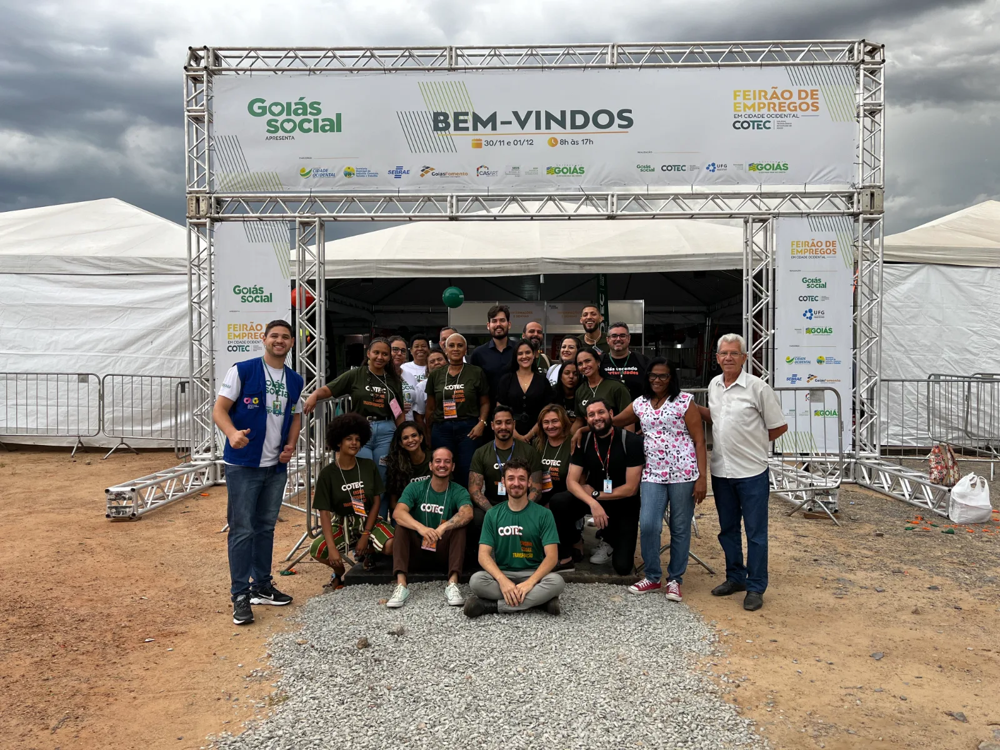

EMPREGO E DESENVOLVIMENTO
FE
3º Feirão do Emprego supera 2,3 mil atendimentos em Cidade Ocidental
Evento realizado no Balão do Friburgo aproximou trabalhadores e empresas e também ofereceu qualificação profissional, crédito e serviços públicos.
Conheça essa iniciativa